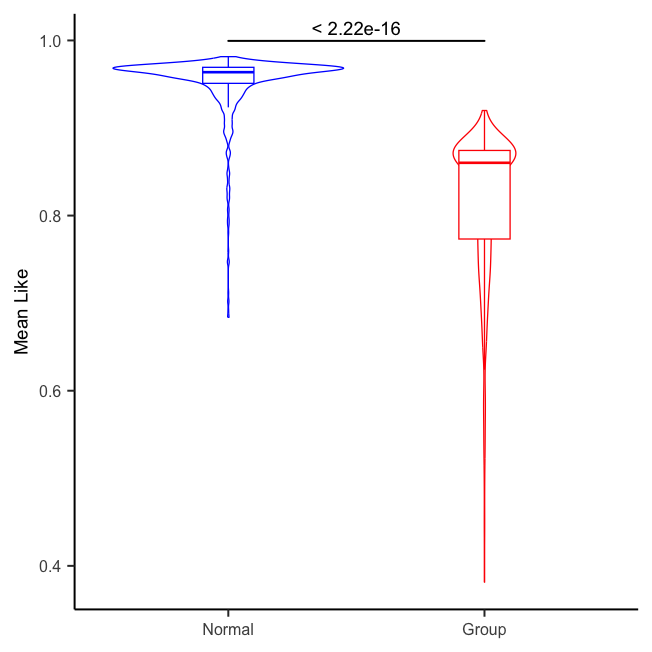
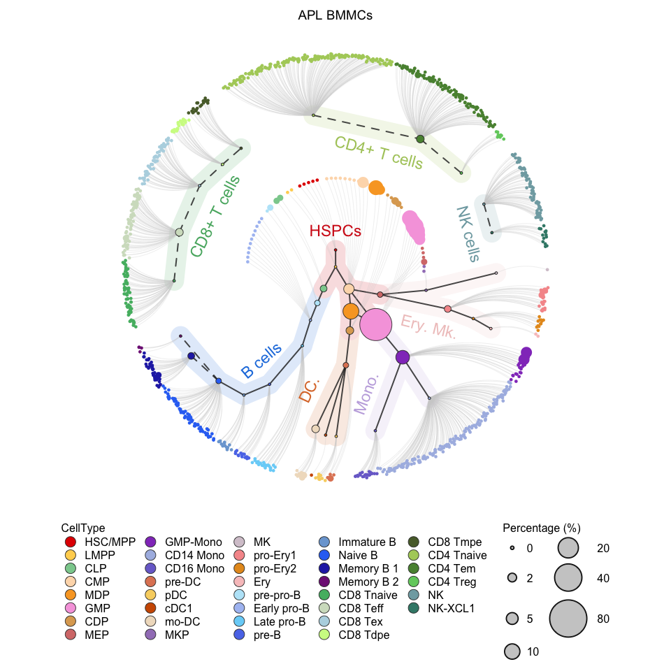
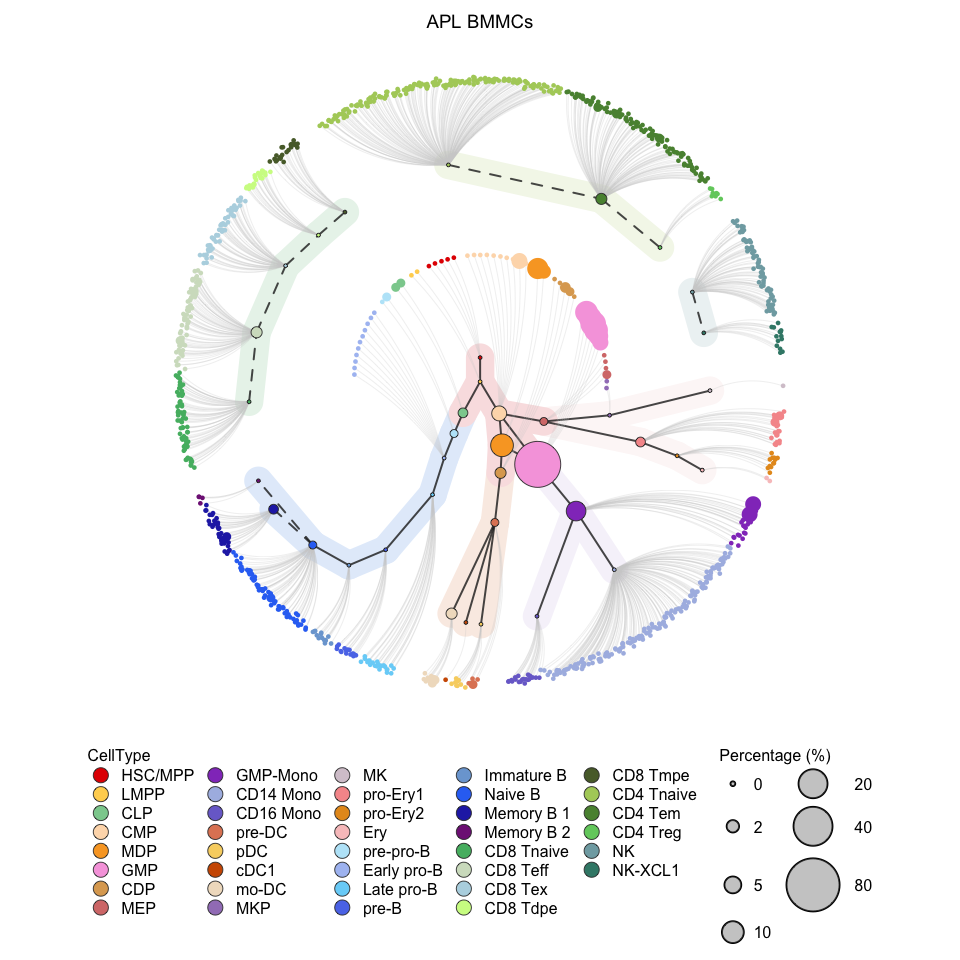
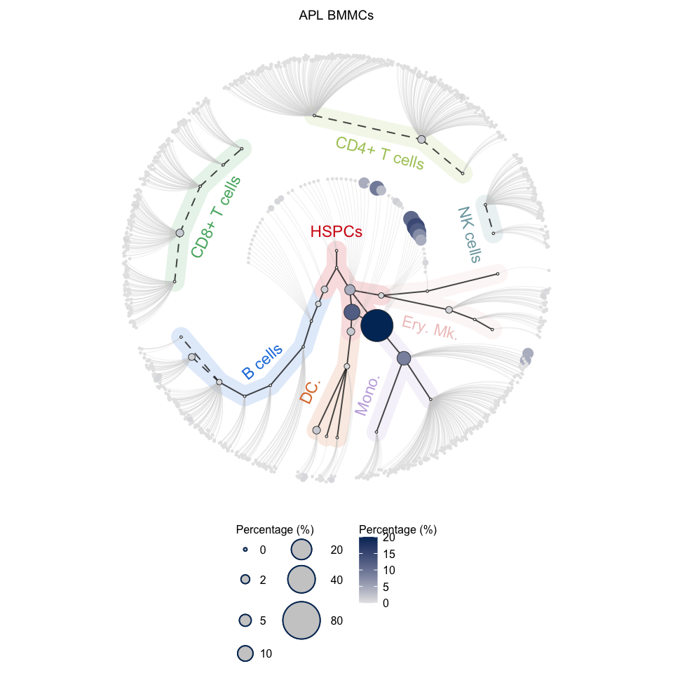
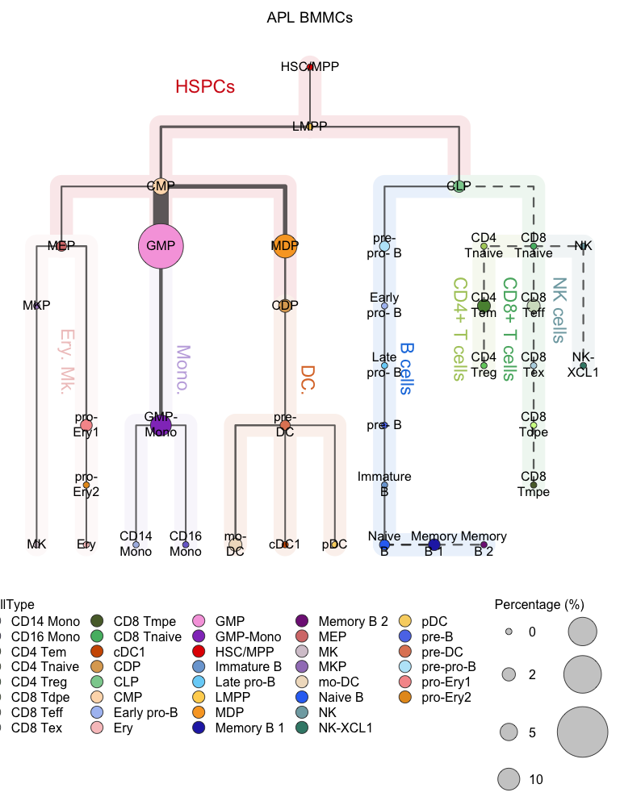
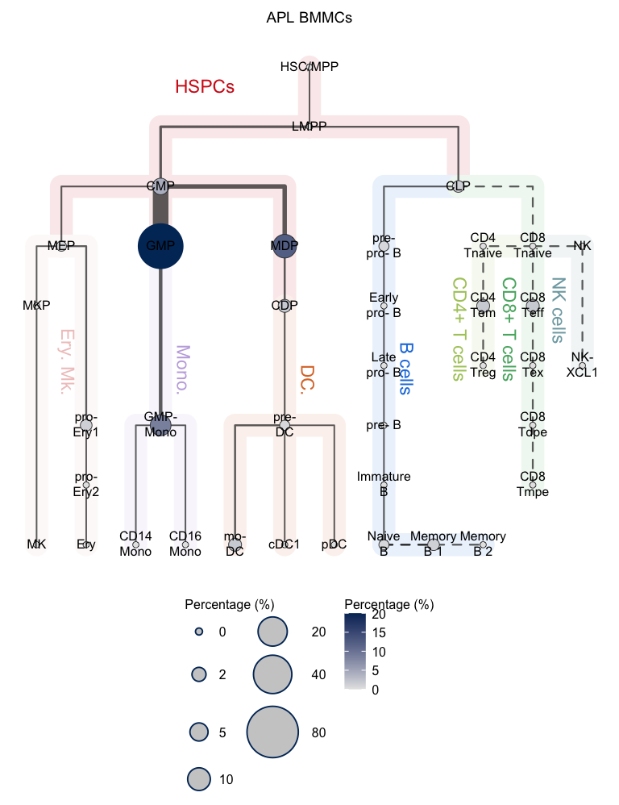

Chapter 4 scRNA-seq
4.1 Load scRNA-seq data
In the tutorial, the scRNA-seq of one APL (AML with PML::RARA fusion, also called acute promyelocytic leukemia)) patient (including 3,000 cells) was used for illustration.
The expample data of APL scRNA-seq can be downloaded via APL scrna demo data
# Library packages
library(Seurat)
library(HematoMap)
# Read count matrix of APL
aml.count <- readRDS("data/AML_scRNA_count.rds")
dim(aml.count)## [1] 36601 3000# Construct Seurat object
aml <- Seurat::CreateSeuratObject(counts = aml.count,
project = "aml",
min.cells = 0,
min.features = 0)
aml## An object of class Seurat
## 36601 features across 3000 samples within 1 assay
## Active assay: RNA (36601 features, 0 variable features)# Save the RDS file
saveRDS(aml, file = "data/AML_scRNA_seurat.rds")4.2 Calculate similarities
# Construct HematoMap object
hmap <- HematoMap::CreateSubclusterObject(aml)## [INFO] 2023-05-08 21:35:29: Subcluster Computing##
| | 0%, ETA NA
|======== | 10%, ETA 00:30
|=============== | 20%, ETA 00:25
|======================= | 30%, ETA 00:20
|=============================== | 40%, ETA 00:16
|====================================== | 50%, ETA 00:13
|============================================== | 60%, ETA 00:10
|====================================================== | 70%, ETA 00:07
|============================================================== | 80%, ETA 00:04## Warning in simpleLoess(y, x, w, span, degree = degree, parametric = parametric, : There are other
## near singularities as well. 0.031008## [INFO] 2023-05-08 21:35:46: Subcluster Complete!##
| | 0%, ETA NA
|== | 2%, ETA 00:03
|=== | 4%, ETA 00:02
|===== | 6%, ETA 00:01
|====== | 8%, ETA 00:01
|======== | 10%, ETA 00:01
|========= | 12%, ETA 00:01
|=========== | 14%, ETA 00:01
|============= | 16%, ETA 00:01
|============== | 18%, ETA 00:00
|================ | 20%, ETA 00:00
|================= | 22%, ETA 00:00
|=================== | 24%, ETA 00:00
|==================== | 27%, ETA 00:00
|====================== | 29%, ETA 00:00
|======================== | 31%, ETA 00:00
|========================= | 33%, ETA 00:00
|=========================== | 35%, ETA 00:00
|============================ | 37%, ETA 00:00
|============================== | 39%, ETA 00:00
|=============================== | 41%, ETA 00:00
|================================= | 43%, ETA 00:00
|=================================== | 45%, ETA 00:00
|==================================== | 47%, ETA 00:00
|====================================== | 49%, ETA 00:00
|======================================= | 51%, ETA 00:00
|========================================= | 53%, ETA 00:00
|========================================== | 55%, ETA 00:00
|============================================ | 57%, ETA 00:00
|============================================== | 59%, ETA 00:00
|=============================================== | 61%, ETA 00:00
|================================================= | 63%, ETA 00:00
|================================================== | 65%, ETA 00:00
|==================================================== | 67%, ETA 00:00
|===================================================== | 69%, ETA 00:00
|======================================================= | 71%, ETA 00:00
|========================================================= | 73%, ETA 00:00
|========================================================== | 76%, ETA 00:00
|============================================================ | 78%, ETA 00:00
|============================================================= | 80%, ETA 00:00
|=============================================================== | 82%, ETA 00:00
|================================================================ | 84%, ETA 00:00
|================================================================== | 86%, ETA 00:00
|==================================================================== | 88%, ETA 00:00
|===================================================================== | 90%, ETA 00:00
|======================================================================= | 92%, ETA 00:00
|======================================================================== | 94%, ETA 00:00
|========================================================================== | 96%, ETA 00:00
|=========================================================================== | 98%, ETA 00:00
|=========================================================================| 100%, Elapsed 00:00## [INFO] 2023-05-08 21:35:46: CosineDist Running## [INFO] 2023-05-08 21:36:08: CosineDist Complete!hmap## An object of class HematoSubCluster
## 49 sub-clusters with cosine distance# C0:0001 was one of the sub-clusters in hmap
# This plot illustrate the "Like" score between sub-cluster in APL and normal BMMCs
plotThetaLike(hemato.subc = hmap, plot.scell = "C0:0001")plotCircleTree(hemato.subc = hmap, plot.scell = "C0:0001")plotMeanLike(hemato.subc = hmap)
4.3 Visualization
# Visualization for APL (circle tree)
plotCircleTree(hemato.subc = hmap, group.subc = "external",
color.mapping = "cell.type", title = "APL BMMCs")
# Visualization for APL (circle tree without population label)
# clean version
plotCircleTree(hemato.subc = hmap, group.subc = "external",
color.mapping = "cell.type", title = "APL BMMCs",
label.population = FALSE)
# Visualization for the normal BMMC (the reference) (circle tree)
plotCircleTree(hemato.subc = hmap, group.subc = "reference",
color.mapping = "cell.type", title = "Normal BMMCs")
# Visualization for APL (circle tree)
plotCircleTree(hemato.subc = hmap, group.subc = "external",
color.mapping = "cell.percentage", title = "APL BMMCs")
# Visualization for the normal BMMC (the reference) (circle tree)
plotCircleTree(hemato.subc = hmap, group.subc = "reference",
color.mapping = "cell.percentage", title = "Normal BMMCs")# Visualization for APL (hierarchy tree)
plotClusterTree(hemato.subc = hmap, group.subc = "external",
color.mapping = "cell.type", title = "APL BMMCs",
point.size = 20, label.cell = TRUE)
# Visualization for the normal BMMCs (hierarchy tree)
plotClusterTree(hemato.subc = hmap, group.subc = "reference",
color.mapping = "cell.type", title = "Normal BMMCs",
point.size = 20, label.cell = TRUE)# Visualization for APL (hierarchy tree)
plotClusterTree(hemato.subc = hmap, group.subc = "external",
color.mapping = "cell.percentage", title = "APL BMMCs",
point.size = 20, label.cell = TRUE)
# Visualization for the normal BMMCs (hierarchy tree)
plotClusterTree(hemato.subc = hmap, group.subc = "reference",
color.mapping = "cell.percentage", title = "Normal BMMCs",
point.size = 20, label.cell = TRUE)